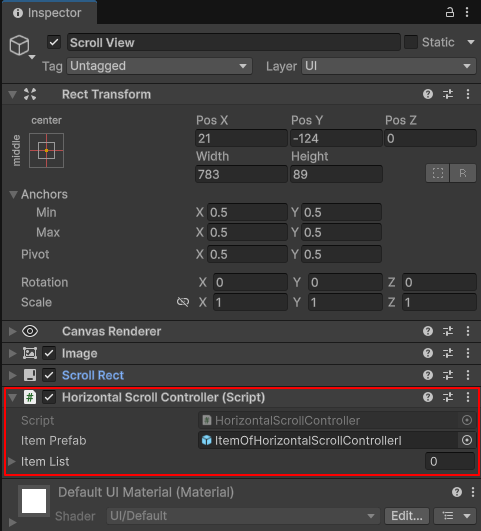
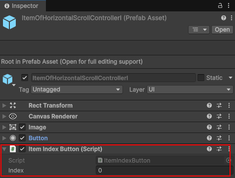

| UGUI Scroll View의 이용하는 방법에 대해 알아 본다. UGUI Scroll View 리소스 만들기 HorizontalScrollController.cs 파일 using System.Collections.Generic;
using UnityEngine; using UnityEngine.UI; public class HorizontalScrollController : MonoBehaviour { private ScrollRect scrollRect; private RectTransform content; private float space = 1; public GameObject itemPrefab; public List<GameObject> itemList = new List<GameObject>(); void Awake() { scrollRect = GetComponent<ScrollRect>(); if (scrollRect != null) content = scrollRect.content; } void Start() { for (int i = 0; i < 100; i++) { AddItem(); } for (int i = 0; i < itemList.Count; i++) { Button btn = itemList[i].GetComponentInChildren<Button>(); Text btnText = itemList[i].GetComponentInChildren<Text>(); btnText.text = (i + 1).ToString(); //버튼이 클릭 되었을때 아이템을 구분하기 위해 인덱스 추가 ItemIndexButton itemIndex = itemList[i].GetComponent<ItemIndexButton>(); itemIndex.index = i; btn.onClick.AddListener(itemIndex.OnClick); } SetSpacing(space); UpdateContentWidth(); } public void HandleItemButtonClick(int index) { Debug.Log("버튼 클릭 index: " + index); } public void AddItem() { GameObject newUI = Instantiate(itemPrefab, content); itemList.Add(newUI); } public void UpdateContentWidth() { // 1. 필요한 컴포넌트 정보 가져오기 HorizontalLayoutGroup layoutGroup = content.GetComponent<HorizontalLayoutGroup>(); RectTransform contentRect = content.GetComponent<RectTransform>(); int childCount = content.childCount; if (childCount == 0) return; // 2. 아이템 하나의 가로 길이 (첫 번째 자식 기준) float itemWidth = content.GetChild(0).GetComponent<RectTransform>().sizeDelta.x; // 3. 전체 너비 계산 공식: // (아이템 너비 * 개수) + (사이 간격 * (개수 - 1)) + 좌우 패딩 float totalWidth = (itemWidth * childCount) + (layoutGroup.spacing * (childCount - 1)) + layoutGroup.padding.left + layoutGroup.padding.right; // 4. Content의 sizeDelta 수정 (가로 길이 반영) contentRect.sizeDelta = new Vector2(totalWidth, contentRect.sizeDelta.y); } public void ClearAllItems() { foreach (var item in itemList) { Destroy(item); } itemList.Clear(); } public void SetSpacing(float spacing) { HorizontalLayoutGroup layout = content.GetComponent<HorizontalLayoutGroup>(); if (layout != null) { layout.spacing = spacing; // 간격이 바뀌면 전체크기가 다시 계산 되어야 하므로 UpdateContentWidth를 실행한다. LayoutRebuilder.ForceRebuildLayoutImmediate(content.GetComponent<RectTransform>()); } } } itemPrefab : ScrollView에 추가할 아이템의 프리팹으로 에디터에서 지정한다. ScrollView 인스펙터 창에서 컴포넌트로 추가한다.  ItemIndexButton.cs 파일 using UnityEngine;
public class ItemIndexButton : MonoBehaviour { public int index; private HorizontalScrollController controller; void Awake() { // 부모에서 컨트롤러 찾기 controller = GetComponentInParent<HorizontalScrollController>(); } public void OnClick() { if(controller) controller.HandleItemButtonClick(index); } } 인스펙터 창에서 ScrollView에 추가한 아이템의 프리팹에 컴포넌트로 추가한다.  아이템을 인덱스에 의해 구분할려고 하는데 어떻게 해야 할까? 람다 방식도 있지만 버튼에 클래스 컴포넌트를 추가 하는 방식으로 하겠다. 버튼의 ItemIndexButton 컴포넌트에 인덱스를 지정하고 버튼 클릭시에 불릴수 있도록 연결한다. ItemIndexButton itemIndex = itemList[i].GetComponent<ItemIndexButton>(); itemIndex.index = i; btn.onClick.AddListener(itemIndex.OnClick); 버튼이 클릭되면 ItemIndexButton.cs에서는 HorizontalScrollController의 HandleItemButtonClick 함수를 호출한다. public void OnClick() { if(controller) controller.HandleItemButtonClick(index); } HorizontalScrollControlle.UpdateContentWidth 함수 버튼을 추가 하거나 속성을 바뀌면 sizeDelta를 업데이트 하기 위해 실행해야 하는 함수이다. HorizontalScrollControlle.SetSpacing 함수 아이템간의 폭을 조정하는 함수이다. |